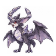
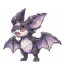
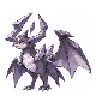

No.195
オビディア
晶 進化形
背の黒い結晶が周囲の熱を吸い込む。裂けた輪形の結晶冠は成長とともに発達する。
基本データ
| 図鑑番号 | No.195 |
|---|---|
| タイプ | 晶タイプ |
| 進化 | Lv.42でオビスレクスに進化 |
| 入手方法 | オビトがLv.24で進化すると出会えます。 |
Lv.50の能力値
| HP | 291 | |
|---|---|---|
| 攻撃 | 171 | |
| 防御 | 125 | |
| 特攻 | 179 | |
| 特防 | 126 | |
| 素早さ | 126 | |
| 命中 | 97 | |
| 回避 | 103 |
冒険中の能力値はレベルに応じて上がります。オンライン対戦の通常レンタルはLv.50で統一されます。
覚える技
| 技 | タイプ | 分類 | 威力 | 命中 | PP | 効果 |
|---|---|---|---|---|---|---|
| 天星の交響 | 晶 | 特殊 | 46 | 86 | 10 | 幾千の星の光を重ねる大技。 |
| 鉱粒の瞬き | 晶 | 特殊 | 23 | 99 | 30 | 小さな鉱石のきらめきを弾く。 |
| 星砂の祝福 | 晶 | 回復 | — | — | 10 | 星砂を降らせて大きく体力を回復する。 PPを1消費する。 |
| 心音の波 | 無 | 物理 | 30 | 98 | 20 | 属性に左右されない心の響き。 |
進化の系譜

オビトLv.24 ▶- オビディアLv.42 ▶

オビスレクス
タイプ相性
晶タイプの技は風タイプに強く（1.5倍）、風タイプの技を受けると効果が大きくなります。同じタイプの技を使うと威力が1.15倍になります。